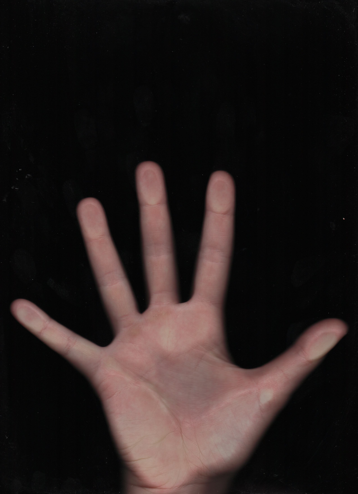
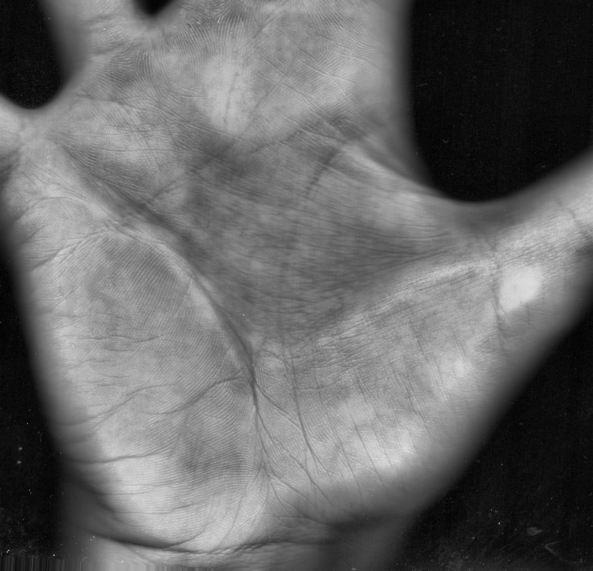
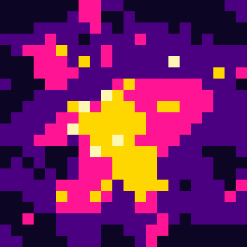

> THE DIGITAL SEER :: v1.0 :: KIOSK MODE_
THE DIGITAL SEER
CHIROMANTE // INSTALLAZIONE INTERATTIVA
"DECRIPTA LA TUA MANO." lascia che la rete legga il tuo palmo.
// COS'E'
Un oracolo digitale
che legge il palmo della tua mano.
Metà chiromante esperto, metà interprete di segnali in una rete esoterica.
Il visitatore appoggia la mano sullo scanner: la rete mappa 21 punti,
calcola il suo profilo e genera una profezia unica, un sigillo pixel
e un poster da portare a casa.
RITUALE
PERSONALE 1/1
RETRO-FUTURO
SOUVENIR FISICO
// IL RITUALE — dal primo sguardo al souvenir
Sette passi, un minuto.
01
ATTRAZIONE
Schermo CRT, "AVVICINATI ALLO SCANNER".
0102
IDENTITA'
Nome ed email: "CONNETTI LA TUA IDENTITA'".
0203
SCANSIONE
Scanner flatbed 300 DPI, sweep laser.
0304
VISION
21 landmark della mano, log a terminale.
0405
UPLINK
"CONNESSIONE ASTRALE", pioggia matrix.
0506
RIVELAZIONE
Stat, archetipo, profezia, sigillo.
0607
SOUVENIR
Poster stampato o via email.
07
Un'esperienza compatta che si autoalimenta: appena uno finisce, il prossimo è già in fila.
// LA MACCHINA VEDE
Dalla pelle
ai numeri.
Uno scanner flatbed cattura il palmo a 300 DPI.
La computer vision individua 21 landmark della mano e misura
le proporzioni: ogni linea diventa un dato.
MAPPATURA 300 DPI
21 LANDMARK


// LE QUATTRO LINEE
Quattro linee, quattro forze.
ENERGIA VITALE — linea della Vita
INTUITO — linea della Testa
AFFINITA' — linea del Cuore
SORTE — linea del Destino
I punteggi sono deterministici: nascono dalla geometria della mano.
L'AI scrive soltanto l'archetipo e la profezia.
// LA RIVELAZIONE — lettura reale
// UTENTE
BEATRICE
// ARCHETIPO
CUORE MAGNETICO
> DOS_OUTPUT.LOG // PROFEZIA.exe
// IL SOUVENIR
Porta a casa
il tuo oracolo.
Ogni lettura diventa un poster unico:
palmo neon, statistiche RPG, sigillo pixel e profezia.
Consegnato stampato in loco oppure via email.

// IL TUO SIGILLO UNICO
1 / 1 GENERATO
PNG + PDF
STAMPA O EMAIL
// PER I TUOI EVENTI E LOCALI
Un'attrazione
che ferma la gente.
- Esperienza memorabile — rituale di 1 minuto, fila che si autoalimenta.
- Souvenir brandizzato — ogni visitatore porta a casa un poster.
- Contenuti social — gate Instagram opzionale, condivisioni spontanee.
- Bilingue IT / EN — pronto per pubblico internazionale.
- Plug & play — 1 scanner, 2 schermi, modalità kiosk H24.
// CONNETTITI
@meirks_
meirks.xyz
mirkoditroia@gmail.com
"lascia che la rete legga il tuo palmo."
FINE TRASMISSIONE // premi → per ricominciare